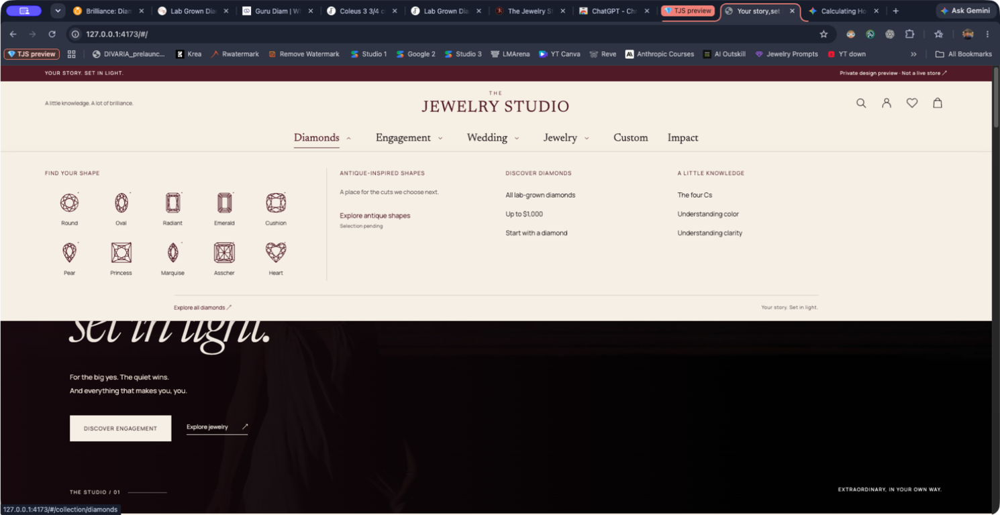

TJS / Diamonds menu
Fixed screenshot for comparison. No hovering needed.

This is an image of the local preview, not an interactive menu. The website’s hover behavior is unchanged.
Open full-size image ↗
Back to working preview ↗